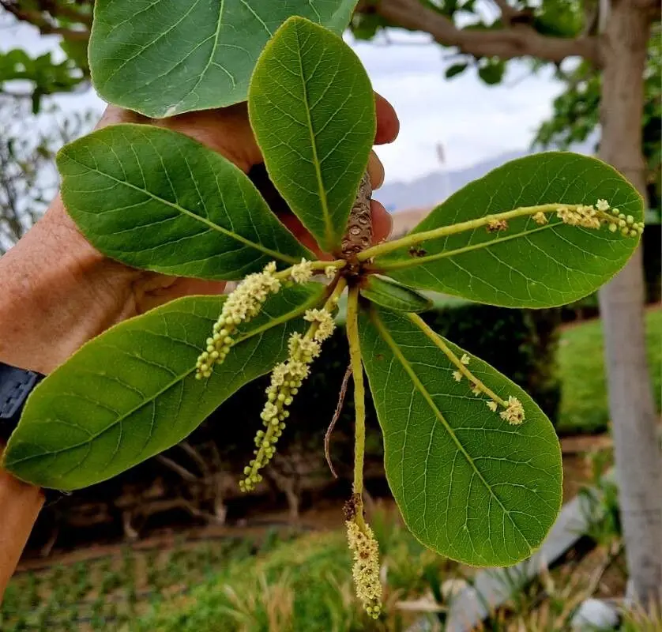
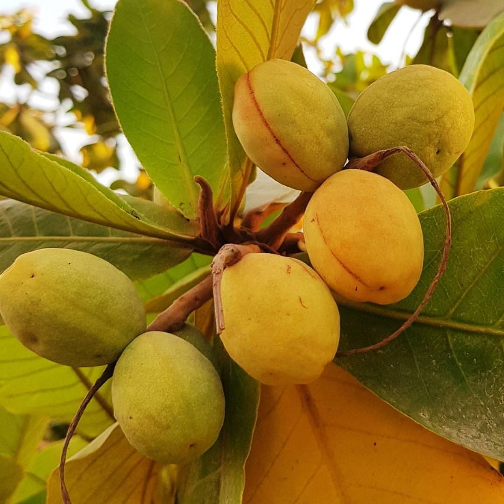
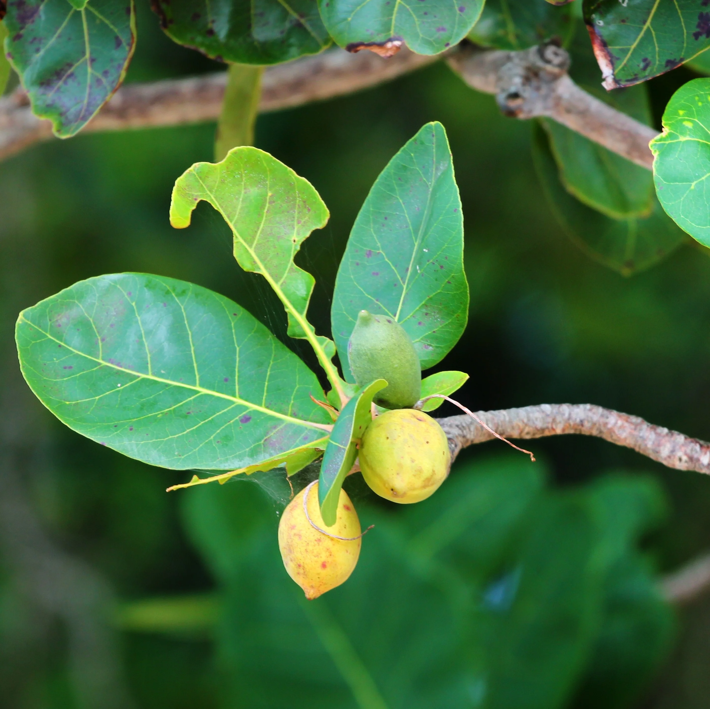

📸 Galería de Imágenes
Explora la belleza del árbol de almendra en diferentes etapas de su crecimiento y floración.



El árbol de almendra (Prunus dulcis) es una especie originaria de Asia Central y el Medio Oriente, ampliamente cultivada por sus frutos comestibles y su valor ecológico. Aprende sobre su cuidado, mantenimiento y cómo contribuye a la protección del medio ambiente.
Ver Cuidados y Más
Un árbol de almendra adulto puede absorber una cantidad significativa de CO₂ al año, contribuyendo a la lucha contra el cambio climático y mejorando la calidad del aire que respiramos.
Kilogramos de CO₂ absorbidos al año
El árbol de almendra (Prunus dulcis) pertenece a la familia Rosaceae y es conocido por su resistencia y adaptabilidad. Puede alcanzar una altura de 4 a 10 metros y vive entre 50 y 70 años. Sus flores, de color blanco o rosado, son una de las primeras en aparecer a finales del invierno, lo que lo convierte en un símbolo de renovación y esperanza. Las almendras son ricas en vitamina E, magnesio, fibra y grasas saludables, siendo un alimento muy valorado en la dieta humana.
Además de su valor nutricional, el árbol de almendra tiene una gran importancia ecológica: sus raíces profundas ayudan a prevenir la erosión del suelo y su copa proporciona sombra y refugio para diversas especies de aves e insectos.
Durante los primeros 2-3 años, el árbol de almendra necesita riego regular para establecer un sistema radicular fuerte. En climas secos, se recomienda regar cada 7-10 días, asegurando que el agua llegue a una profundidad de 30-40 cm. Evita el encharcamiento, ya que puede causar pudrición de raíces.
El árbol de almendra requiere al menos 6-8 horas de sol directo al día para crecer fuerte y producir frutos de calidad. Es importante plantarlo en un lugar donde no haya sombra de otros árboles o estructuras.
La poda debe realizarse al final del invierno, antes de que el árbol comience a brotar. Elimina ramas secas, enfermas o que crezcan hacia el centro del árbol para mejorar la circulación del aire y la penetración de la luz.
Aplica abono orgánico o compost al inicio de la primavera y a mediados del verano. Los árboles de almendra responden bien a fertilizantes ricos en nitrógeno, fósforo y potasio. Evita el exceso de fertilizante, ya que puede dañar las raíces.
Las plagas más comunes son el pulgón, la cochinilla y el taladro del hueso. Para prevenirlas, mantén el árbol sano con riego y fertilización adecuados. Usa insecticidas naturales como el aceite de neem si es necesario.
El árbol de almendra se adapta mejor a climas mediterráneos, con inviernos fríos y veranos cálidos y secos. No tolera bien las heladas tardías durante la floración, ya que pueden dañar las flores y reducir la producción de frutos.
Un solo árbol de almendra puede absorber hasta 22 kg de CO₂ al año, ayudando a mitigar el efecto invernadero y mejorar la calidad del aire en su entorno.
Sus ramas y hojas ofrecen refugio y alimento a aves, abejas e insectos polinizadores, contribuyendo a la biodiversidad y al equilibrio de los ecosistemas locales.
La sombra de un árbol de almendra puede reducir la temperatura ambiental en hasta 5°C, lo que ayuda a combatir el efecto de "isla de calor" en zonas urbanas.
Sus raíces profundas evitan la erosión del suelo, especialmente en zonas con pendiente, y mejoran la estructura del terreno al añadir materia orgánica.
Un árbol de almendra adulto produce suficiente oxígeno para que 2-3 personas respiren durante un día, mejorando la calidad del aire en su entorno.
Las almendras son una fuente excelente de proteínas, fibra, vitamina E y grasas saludables, beneficiosas para la salud cardiovascular, la piel y el sistema inmunológico.
Explora la belleza del árbol de almendra en diferentes etapas de su crecimiento y floración.


Los árboles de almendra no solo son valiosos por su producción agrícola, sino también por su contribución al equilibrio ecológico. Ayudan a conservar el suelo, generan espacios verdes que mejoran la calidad de vida y son una fuente importante de alimento para la fauna local.
En El Salvador, la siembra de árboles de almendra puede ser una estrategia efectiva para la reforestación y la adaptación al cambio climático, ya que son resistentes a la sequía y pueden crecer en suelos pobres.